Table Of Contents
- 1. Non Mixer User Manual
1. Non Mixer User Manual
| 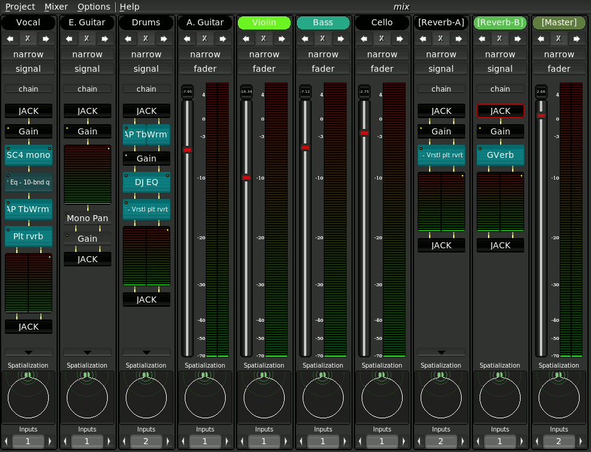 |
The Non-Mixer is a stand-alone audio mixer, utilizing JACK as an audio subsystem. At the time of writing, the architecture of Non-Mixer is unique. By making the mixer stand-alone, concepts such as busses, sends, and inserts are eliminated, as the same goals can be achieved by simply adding more strips to the mixer.
Start by creating a new project (menu item Project/New).
| 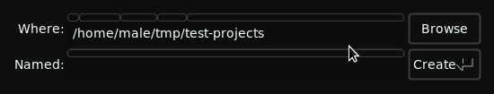 |
After the project has been created. Hit a or choose Mixer/Add Strip from the menu to add a new strip to the mixer.
1.1. Mixer Groups
| 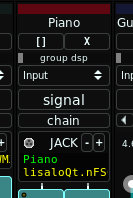 |
Groups serve several purposes. Firstly, they allow for some organization of strips. Groups also allow parallel relationships of mixer strips to be made explicit. This has important performance implications in JACK2. Non Mixer supports an unlimited number of groups, each of which can contain an unlimited number of mixer strips.
1.1.1. How to Choose Groupings
All strips in a group should be completely parallel with no feedback loop connections. A typical group might be named 'Input' and contain all input strips (strips that accept input from Non Timeline and have outputs all connecting to some master bus).
To put it another way, if you have 100 inputs strips with identical output configurations (e.g. stereo or B-Format), that all connect to a master bus, then you have a candidate for a group.
1.1.2. Considering JACK Overhead
JACK provides immense flexibility. But, as in most situations, that flexibility comes with a cost. In JACK the cost is a context switch per client. This applies even for many clients which belong to the same process, as in Non Mixer. Various factors go into determining the price of a context switch on any given system. It's not very expensive, but it does add up. It becomes problematic in sessions involving many clients (think 100s), each of which having a small DSP load (often smaller than the cost of JACK's context context switch). JACK could be smart enough to recognize that some clients belong to the same process and could be executed serially without requiring a context switch, but at the time of writing neither JACK1 nor JACK2's scheduling is that smart.
If you're mixing a normal song (couple of dozen tracks) at low latency, this overhead will probably account for less than 1% of the total DSP load. If you're mixing an entire orchestra at ultra-low latency, then it might account for a quarter or more of the total DSP load.
Groups mitigate this cost by reducing the number of JACK clients required for a mix. Strips in a group will execute serially without context switches or thread synchronization--reducing the total JACK overhead. However, if you have several groups, then they may all by run in parallel by JACK2.
To illustrate this point here are some figures from an actual song session including the whole Non suite plus a sampler, a synth and an ambisonics convolution reverb with a total of 13 strips in 4 groups in different configurations on the same system.
JACK's DSP load figures are interpreted thus: if at a 2.7ms software latency setting the average time a proces cycle takes to complete is 2.7ms, then the DSP load is 100%. The usable ceiling on DSP load is 80%. This is true for both JACK1 and JACK2. The difference is that JACK2 may use all available CPU cores to execute the graph (if there are enough clients in parallel signal flow).
32-bit Intel Core2 Duo @1.6Ghz -r 48000 -p 256 -n 2 (5.3ms)
| JACK Ver | Groups | DSP Load |
|---|---|---|
| JACK1 | N | 39% |
| JACK1 | Y | 27% |
| JACK2 | N | 24% |
| JACK2 | Y | 31% |
AMD FX-8350 @ 4.2Ghz 64-bit -r 48000 -p 256 -n 2 (5.3ms)
| JACK Ver | Groups | DSP Load |
|---|---|---|
| JACK1 | N | 28% |
| JACK1 | Y | 12% |
| JACK2 | N | 12% |
| JACK2 | Y | 11% |
AMD FX-8350 @ 4.2Ghz 64-bit -r 48000 -p 128 -n 2 (2.7ms)
| JACK Ver | Groups | DSP Load |
|---|---|---|
| JACK1 | N | 29% |
| JACK1 | Y | 17% |
| JACK2 | N | 17% |
| JACK2 | Y | 17% |
AMD FX-8350 @ 4.2Ghz 64-bit -r 48000 -p 32 -n 2 (0.7ms)
| JACK Ver | Groups | DSP Load |
|---|---|---|
| JACK1 | N | x |
| JACK1 | Y | x |
| JACK2 | N | 43% |
| JACK2 | Y | 41% |
As you can see, for multiprocessor systems, JACK2 clearly has an advantage even without grouping.
Of course, results will vary depending on the system and the mix. On the dual core system, performance actually degraded with JACK2 when using groups--this is because the number of parallel flows that JACK2 detected was reduced and the second core was being under utilized. Similarly, the performance of the 8-core AMD system doesn't seem that great even in the ungrouped mode--this is because the DSP load of each individual client is around the same as the cost of the context switching. It's a wash either way (if each strip had more or more complex modules on it, then the ungrouped mode would probably perform better). Since JACK1 cannot take advantage of more than 1 CPU core, there is no benefit to parallelism and grouped mode always outperforms ungrouped mode.
So, for maximum capacity the combination of a multicore CPU with JACK2 and mixer groups is best.
1.1.3. Creating a New Group
Groups can be created by selecting the group dropdown on any mixer strip and choosing 'New Group'. A window will popup asking for a group name. Group names must be unique. The group will then be created and the selected strip added to it.
1.1.4. Adding a Strip to an Existing Group
To add a strip to an existing group, simply select a group name from the group dropdown on the strip.
1.1.5. Removing a Strip from a Group
Select '---' from the group dropdown. The strip will be removed from the group and will run in an independent JACK client.
1.1.6. Removing a Group
Groups are destroyed automatically as soon as they contain zero strips.
1.1.7. Monitoring Group DSP Load
Above the grop dropdown on each strip is a DSP load meter for the selected group. For ungrouped strips or strips which are the only one in their group, this is simply the DSP load of the single strip.
If DSP usage goes up when strips are fed silence, then you're probably running a plugin which has denormal issues.
1.2. Mixer Strips
| 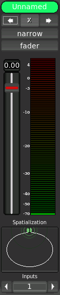 |
Each mixer strip has a name and color, each of which may be defined by the user. Names, but not colors, must be unique. In addition, each strip has controls to move it left or right (the arrows) in the display and to remove it entirely (the 'X').
Strips start out in narrow mode, with the fader view enabled. Click the desired button to toggle the mode or view.
The fader view comprises a large gain control and digital peak meter indicator. These are automatically connected to the default gain and meter modules of the strip's signal chain.
To see how an audio signal traveling through this strip will be processed, switch to its signal view.
1.2.1. Navigation
A strip is focused when you click on it. Focus can be moved among strips with the Tab and Shift-Tab keys.
1.2.2. Control
The focused strip can be moved in the display order via the [ and ] keys. Delete removes a strip (with confirmation dialog). n and w set the focused strip's width to narrow or wide, respectively, and f and s switch between fader and signal views. The strip's context menu can be invoked without the mouse by hitting the Menu key (assuming your keyboard has one).
1.2.3. Signal Chain
The signal chain view of a mixer strip provides a way to view and manipulate the signal processing of a mixer strip.
1.2.3.1. Modules
| 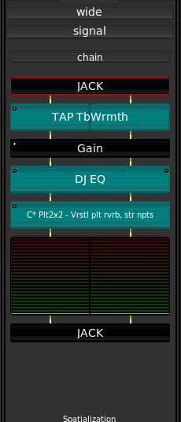 |
All signal processing in Non Mixer occurs in Modules. Modules are signal processing abstractions providing ports for audio and control I/O and, in addition, some simple user interface. Sink and source modules carry audio out of and into JACK.
Modules are displayed as named blocks. Some modules (e.g. the Meter module) may have additional GUI components.
Each module has zero or more audio I/O ports and zero or more control ports. Audio routing between modules is handled automatically. Modules with mono audio configurations (one channel in, one channel out) can be automatically adjusted to support any number of discrete channels. Modules with more (related) channels, however, introduce restrictions on the order in which modules can be chained.
An indicator in the upper left-hand corner of each module block indicates whether the module has any parameters bound to controls.
Non Mixer has several built-in modules. They are:
- JACK
- Performs JACK I/O
- Gain
- Applies gain in dB
- Meter
- Digital Peak Meter
- Mono Pan
- Performs intensity panning of a mono signal into a stereo signal.
- Aux
- Provides auxiliary outputs
- Spatializer
- Provides advanced Ambisonics spatialization with distance simulation.
- Plugin
- Hosts a LADSPA plugin
1.2.3.1.1. OSC Control
The input parameters of all modules are controllable via OSC, regardless of whether the parameter is set as controllable.
The format of the automatically generated OSC path names is as follows:
/strip/[STRIP_NAME]/[MODULE_NAME]/[PARAMETER_NAME] |
The UDP port that the OSC server binds to can be set by providing the --osc-port command-line option. Without this option, a random port will be bound automatically (the exact OSC URL will always be printed to the console as a line beginning with "OSC: ").
The default path accepts a float value between 0.0 and 1.0 (a Control Voltage like signal) which will be automatically scaled to the allowable range of the control.
A path ending in /unscaled is also available, which accepts exact values, which will be clamped to the allowable range. For example:
/strip/[STRIP_NAME]/[MODULE_NAME]/[PARAMETER_NAME]/unscaled |
If same module/plugin is used twice in a signal chain (e.g. multiple Gain stages), then a position dependent sequence number will be appended to the module name. For example, a path might look like the following:
/strip/Foo/Gain.1/Gain_(dB) |
For the second instance of the Gain module on the strip named 'Foo'.
There's a possibility to get exact OSC path for module controls. For this you need to switch strip mode to 'Signl', right click a module, for example 'Gain', and open 'Edit parameters' dialog. OSC path will be shown in a statusbar of the main window when you hover a parameter.
Non-DAW accesses these same signals via a more advanced signal routing layer on top of OSC. Any module parameter is easily controlled via Control Sequences in Non-DAW without the need to specify an OSC URL.
1.2.3.1.2. MIDI Control
Automatic translation between MIDI and Non's OSC Signals can be achieved by adding the headless program non-midi-mapper (included in the Non-Mixer distribution) to an NSM session.
Non-MIDI-Mapper provides JACK MIDI input and output ports that can be connected to a suitable controller device.
In Non-Mixer, the Remote Control/Start Learning menu item enters learning mode in which Non Mixer can be taught which controls to associated with which MIDI messages by clicking a control in Non-Mixer and moving the desired control on the MIDI device. Remote Control/End Learning ends the learning session.
The mapping will be saved with the NSM session.
1.2.3.1.3. Manipulation
Left-clicking on a module brings up a Module Parameter Editor window for the selected module.
Right-clicking on a module brings up a context menu allowing you manipulate the module, as well as to pick a new module to insert before the selected one in the chain.
Middle-clicking on a module toggles its activation state (the audio signal will bypass inactive modules).
Control+Right-clicking on a module causes it to be removed from the chain (modules added by default cannot be removed).
The focused module may also be controlled via the keyboard. Menu brings up the context menu for the focused module. Space opens the module parameter editor, b toggles the bypassed state, and Delete removes the module from the chain (without confirmation!). Control-X, Control-C and Control-V, cut, copy, and paste modules, respectively. Modules may be copied within or across chain boundaries. The normal module I/O constraints also apply to pasted modules.
1.2.3.1.4. Module Parameter Editor
 |
The Module Parameter Editor is used to alter the values of a module's parameters, and in addition, to bind its parameters to controls. A menu button in the upper left-hand corner allows you to select between knob, vertical slider and horizontal slider controls.
Underneath each control is a bind button. Clicking adds a new control to the chain's Controls view and binds it to the parameter in question. For simplicity, only one control at a time may be bound to a given parameter.
1.2.3.1.5. Controls
| 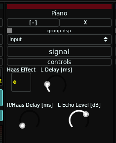 |
The control view of a chain groups together all of the controls bound to parameters of modules in that chain. The default mode of controls is Manual. Right click on a control to bring up a menu which will allow you to select one of the available control I/O methods to use. When Control Voltage (CV) is selected, a CV input port will be created on the containing mixer strip's JACK client. The control will now accept values from that input. A control bound and configured in this way can then be connected to the output of a Non-DAW control sequence using your favorite connection manager.
| NOTE: All knob and slider controls respond to mousewheel events. Hold down the `Ctrl` key while scrolling the mousewheel to achieve finer resolution. |
1.2.3.1.5.1. Control Voltages
The control voltage concept should be familiar to anyone who has experience with analog modular synthesizers. MIDI, while having definite advantages in many respects, multiplexes control data in such a way as to make connecting one MIDI control to a parameter involve a significant inconvenience, usually requiring the adjustment of settings on both ends of the connection in order to separate the control data streams.
Control Voltages, on the other hand, provide a simple 1:1 source to sink relationship and offer much higher resolution, both in time and value, than can be natively expressed through MIDI. The chief advantage of CV in the context of Non-DAW is the ease with which an control sequence can be connected to a mixer module parameter. If you have a MIDI controller that you'd like to use to control parameters of Non-Mixer, consider jm2cv, a JACK MIDI to Control Voltage daemon which was written by Peter Nelson specifically for use with Non-Mixer. jm2cv can be acquired by:
git clone git://fuzzle.org/jm2cv.git |
| NOTE: The use of Control Signals (OSC) should be preferred for most types of parameter automation, as LADSPA plugins are incapable of processing Control Voltage signals at full audio resolution anyway. |
1.2.3.1.6. Spatialization
1.2.3.1.6.1. Spatializer Module
| 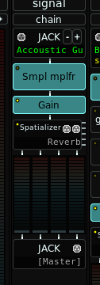 |
The Spatializer Module included with Non Mixer allows one to not only control the position of a sound source (angle and elevation), but also to control it's apparent distance from the listener.
Distance cues are based on physical properties--the speed of sound in air, the damping effect of humidity, the ratio of reverb early and late reflections, the volume of the sound.
In legacy mixers, all of these properties must be controlled individually by the engineer. This is nearly always a process of trial and error. Much of a studio engineers' skill lies in his ability to guess at these values and arrive at a reasonably realistic sounding result.
Non Mixer eliminates the guesswork and combines all of these controls into a single spatialization point encoding both a sound source's position relative to the listener and its distance. No matter where the point is placed, the result will be realistic.
Use of the Spatializer Modules eliminates much complexity from the mixing process. No more back and forth, no more guessing at values for reverb sends and predelay and EQ. The Spatializer does it all for you.
The B-Format outputs of the Spatializer Module are in the order standard order WXYZ.
All Spatializer Module instances will present controls and aziumuth, elevation, and radius. Additionally, a Highpass control is provided to compensate for the proximity effect in close-mic'd signals. The default cutoff is 200Hz. Adjust it according to the nature of the input signal.
A Spatializer Module fed stereo input will perform stereo encoding and will present a Width control.
The Spatializer module is intended to work with an external reverb engine having Ambisonics B-Format inputs for early reflections and a Mono input for reverb tail (and, of course, B-Format outputs).
 |
The Spatializer Module has two sets auxiliary outputs for reverb send. One, consisting of a single mono signal, is intended to be connected to the input of a reverb tail, otherwise known as a diffuse field. Another set of outputs in B-Format is indended to be connected to the B-Format inputs of an early reflection reverb engine. The output of the reverb engine should be 100% 'wet'.
I have crafted several jconvolver config files that meet these specifications. They can be found in ambiverb.tar.bz2
The main outputs of the strip should go to a master bus, into which the output of the reverb engine is also fed.
1.2.3.1.6.2. LADSPA Plugins
There are several Ambisonics panners/encoders released as LADSPA plugins. When one of these plugins is added to a strip, Non Mixer will detect its parameter signature and create a Spatialization Control for it just as with the Spatializer Module.
| 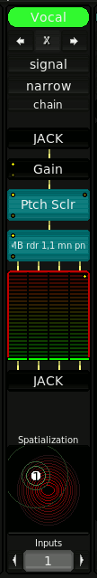 |
Whenever a module is added to a strip whose set of parameters include parameters named Azimuth and Elevation (and perhaps Radius), Non-Mixer will detect this and automatically attach a Spatializer control to these parameters. The Spatializer will be displayed at the bottom of the mixer strip. A larger version of the control may also be found in the Module Parameter Editor.
| 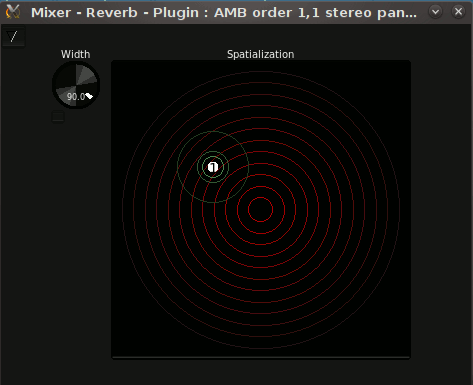 |
The spatialization control may be visualized as moving the sound source across the surface of a hemispherical dome enclosing the listener.
The output of the spatializing plugin may be routed into a decoding plugin following it the same strip or, more usefully, the output of a number of Ambisonic panning plugins on different strips may be routed (through JACK) into a single master decoder instance on a final strip.
1.3. Spatialization Console
| 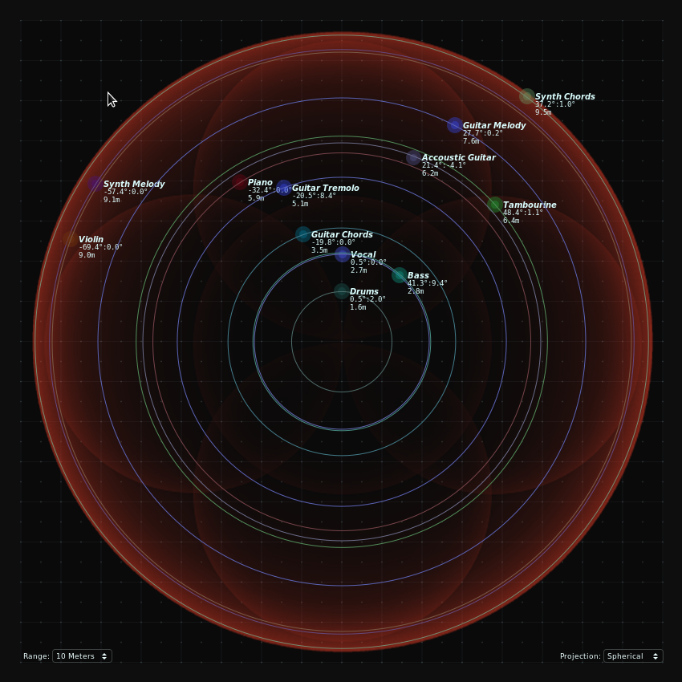 |
The Spatialization Console allows the user to view and control all of the source positions in an Ambisonics mix at once.
The visibility of the Spatialization Console may be toggled with the F8 key.
The console will display a point for each Spatializer Module or other Ambisonics panner plugin contained in the mix.
There are two projections available, Planar and Spherical. The range of the view can be adjusted with the range dropdown in the lower lefthand corner.
1.4. Projects
A Non-Mixer project is a directory where Non-Mixer keeps the strip settings, project specific settings, and some meta-data. A project is completely self-contained. You can rename a project as simply as:
$ mv Project-A Project-B |
1.4.1. JACK I/O
Each mixer strip is presented as a separate JACK "client". This helps to avoid the necessity of internally duplicating JACK's routing logic and, with JACK2, permits the possibility of parallel execution of mixer strip signal chains.
The JACK client name of each strip will correspond to the name of the strip.
| NOTE: The JACK API makes implementing this far more difficult and kludgey than it should have to be. Please petition your local JACK developer to accept jack_client_set_name() into the API. |
| 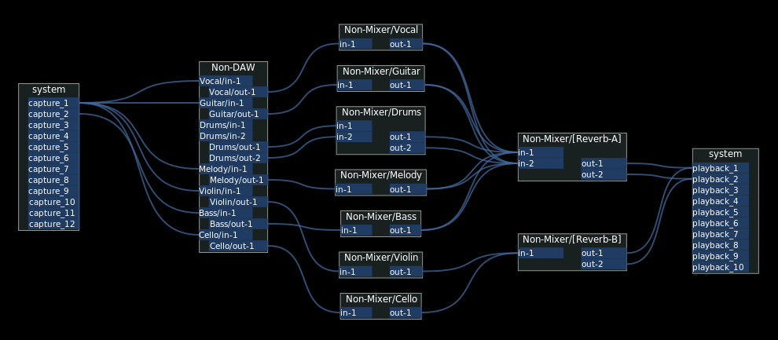 |